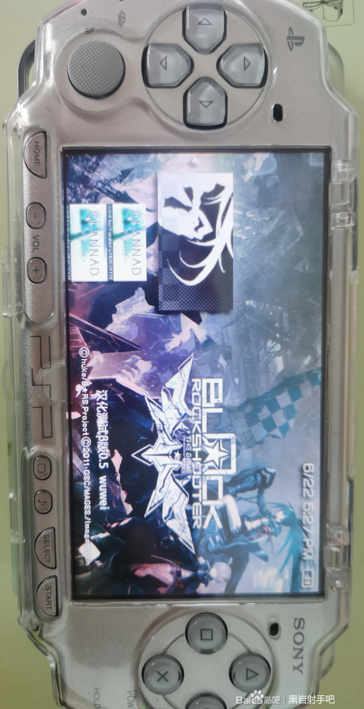

|
主页
汉化发布页
成员
黑岩射手攻略（转载）
黑岩壁纸（不定期更新）
与我们联系
档案
公告
黑岩射手官方网站复现
日志
测试组组员感言
特别鸣谢（持续更新）
| |
敬启者，
特大公告！！
历经五小时之精心钻研，本人逐一审视了黑岩镜像下的每一文件，终得将游戏中所有文本悉数导出。此间，虽遭遇诸多琐碎文件及过场动画的视频渲染版（或许为虑及PSP渲染能力特意准备，估测或针对PSP1000机型，实则非必需），过程艰辛，诚然考验耐性。
其间亦不乏混淆视听之文件，主体充斥乱码与连续换行（十六进制的0A是换行符），即便如此，审慎查阅，无一遗漏，足见汉化之路，步步艰辛。因而，萤火虫框架界面上“珍爱生命，远离汉化！”之警句，深感共鸣。唯有真爱，方能承受此般磨砺。
在此，须特别提及，吾等成就皆建立于前人基石之上，众多前辈开发之工具助力巨大（虽部分缺乏指引，需自行探索，但仍感激备至）。网络之上，高手林立，其无私帮助，更为此项目添翼。
后续，吾组将汇总汉化所需文本，并随即启动正式汉化进程（预计需时数月，吾团队诸位皆有日常职责，时间安排需灵活调整）。吾等心怀愿景，望此作能成为2024年度首部PSP汉化游戏，更盼未来有更多汉化团队加入旧作汉化行列。
最后，敬请诸位放心期待本次汉化之旅（祈愿勿与其他团队撞车），一旦圆满，必即刻于贴吧公布喜讯，与君共庆！
谨此通告，
黑岩射手汉化组
２０２４年６月２２日１７：２５：３５

|